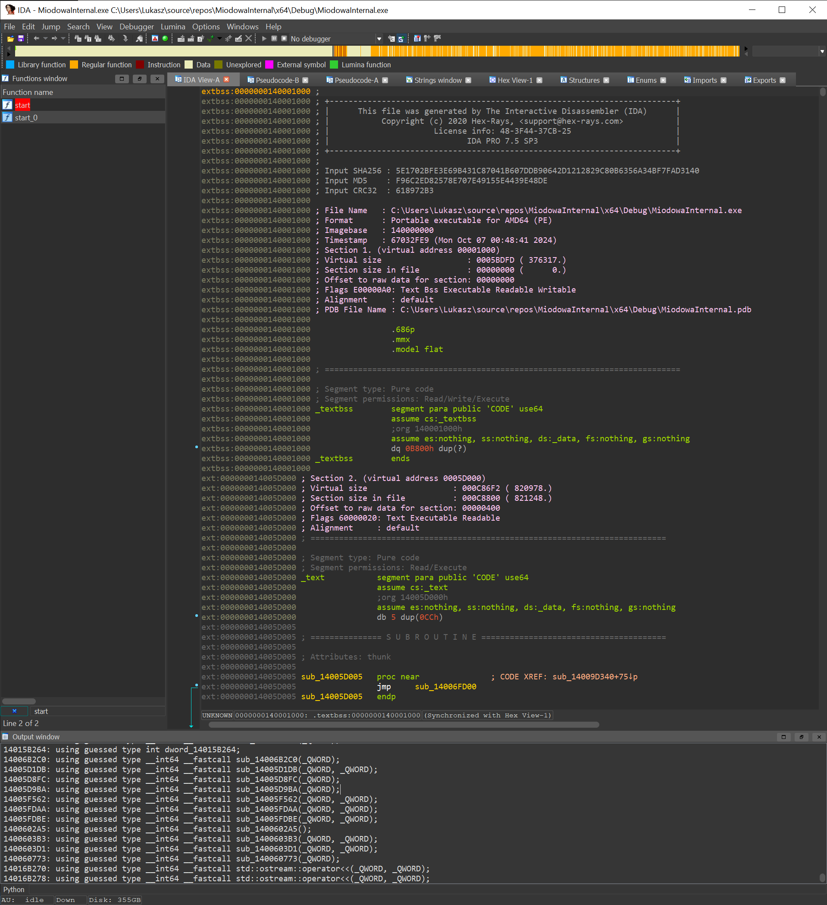
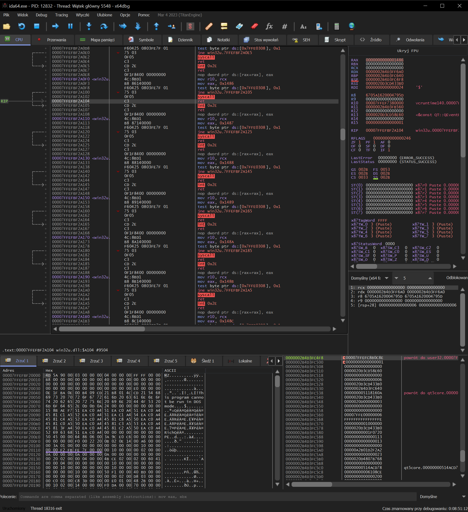

Statyczna analiza
Statyczna analiza w inżynierii wstecznej polega na badaniu plików binarnych bez ich uruchamiania. W tym podejściu analitycy wykorzystują narzędzia takie jak disasemblatory i dekompilatory, aby przekształcić kod maszynowy w bardziej zrozumiałą formę, taką jak asembler lub kod wysokiego poziomu. Statyczna analiza pozwala na identyfikację struktur danych, funkcji, wywołań API oraz wszelkich ukrytych mechanizmów, takich jak techniki obfuskacji. Ponieważ nie wymaga uruchamiania programu, jest to bezpieczniejsza metoda, szczególnie w przypadku podejrzanych plików. Niemniej jednak, statyczna analiza może być ograniczona w ocenie zachowania programu w czasie rzeczywistym, co sprawia, że niektóre aspekty mogą pozostać niewykryte.
Dynamiczna analiza
Dynamiczna analiza natomiast polega na badaniu działania programu podczas jego uruchamiania. Umożliwia obserwację rzeczywistych zachowań aplikacji, takich jak interakcje z systemem operacyjnym, modyfikacje rejestrów, operacje na plikach i komunikację sieciową. Analitycy mogą używać debuggerów do śledzenia wykonywanych instrukcji, monitorowania zmiennych oraz identyfikowania potencjalnych luk w zabezpieczeniach, takich jak przepełnienia bufora czy inne błędy. Dynamiczna analiza dostarcza informacji, które mogą być trudne do uzyskania za pomocą statycznych metod, jednak wiąże się z ryzykiem, ponieważ uruchamianie złośliwego oprogramowania może prowadzić do niepożądanych skutków. Właściwe zastosowanie obu metod w inżynierii wstecznej umożliwia pełniejszą analizę i zrozumienie badanych aplikacji.